Taylor Swift - Era reputation
17/04/2023 - 14:19
Prólogo
"Aqui vai uma coisa que aprendi sobre pessoas.
Nós achamos que conhecemos alguém, mas a verdade é que nós só conhecemos a versão de si mesmo que essa
pessoa escolhe nos mostrar. Nós conhecemos um amigo de certa forma, mas não o conhecemos da forma como
sua pessoa amada o conhece. A forma como sua pessoa amada o conhece jamais será a mesma que você o
conhece, como seu amigo. Sua mãe o conhece de forma diferente de seu colega de quarto, que o conhece de
forma diferente de seu colega de trabalho. Seu admirador secreto olha para ele e vê um pôr-do-sol
repleto de cores brilhantes, dimensão e espírito inestimáveis. E, ainda assim, um estranho passará pela
mesma pessoa na rua e não verá nada além de um desconhecido na multidão. Podemos ouvir rumores sobre uma
pessoa e acreditar que eles são verdadeiros. Podemos um dia conhecer essa pessoa e nos sentir tolos por
acreditarmos em fofocas sem fundamento.
Esta é a primeira geração que poderá olhar para toda sua história de vida documentada em fotos na
internet e, juntos, descobriremos o efeito que isso terá. Fundamentalmente, postamos fotos online para
selecionar o que estranhos pensam de nós. Mas então acordamos, olhamos para nossos rostos no espelho e
vemos nossas rachaduras e cicatrizes e defeitos e inseguranças, e nos encolhemos de medo. Esperamos que
um dia encontremos alguém que olhe para aquele mesmo rosto amassado pela manhã e, em vez de ver as
coisas ruins, veja o seu futuro, o seu parceiro, o seu “para sempre”. Alguém que ainda nos escolha
depois de ver todos os lados da história, todos os ângulos do caleidoscópio que você é.
O ponto é que, apesar da nossa necessidade de simplificar tudo e todos nesta vida, humanos são
intrinsecamente impossíveis de simplificar. Nós nunca somos só bons ou ruins. Nós somos mosaicos de
nossas piores partes e nossas melhores partes, de nossos segredos mais sombrios e nossas histórias
favoritas para contar durante o jantar, e existimos em algum lugar entre a foto de perfil bem-iluminada
e a foto 3×4 da carteira de motorista. Somos todos uma mistura de egoísmo e generosidade, lealdade e
autopreservação, pragmatismo e impulsividade. Eu tenho uma vida pública desde os 15 anos de idade. O
lado bonito e fascinante disso é que tenho a sorte de viver da música e olhar para multidões de pessoas
queridas e animadas. O outro lado da moeda é que meus erros foram usados contra mim, as dores dos meus
términos foram usadas como entretenimento e minhas composições foram banalizadas como ‘pessoais demais’.
Quando este álbum sair, blogs de fofoca vão vasculhar as letras procurando os homens que eles acham que
podem atribuir a cada canção, como se a inspiração para música fosse tão simples e básica quanto um
teste de paternidade. Haverá slides com fotos apoiando cada uma das teorias incorretas, por que é 2017
e, se você não viu uma fotografia, não pode ter acontecido, certo?
Deixa eu dizer mais uma vez, mais alto para aqueles que estão no fundo…
Nós achamos que conhecemos alguém, mas a verdade é que nós só conhecemos a versão de si mesmo que essa
pessoa escolhe nos mostrar.
Não haverá mais explicação. Haverá apenas reputação."
Taylor Swift desbravou o mundo da música em 2006, se tornou um fenômeno desde então.
Mas vocês se recordam de uma das maiores eras da cantora ? A era “Reputation” deu nome e
mudou a sua carreira por completo.
3 anos depois do sucesso estrondoso do “1989”, que culminou com o Grammy de álbum do ano, Taylor Swift
voltou ao cenário musical com “reputation”. A volta de Taylor ocorreu depois de um ano conturbado em que
ela terminou o relacionamento com Calvin Harris, viajou o mundo ao lado de Tom Hiddleston, fez as pazes
e viu Kanye West ser o foco de mais um capítulo desgastante em sua vida.
Como um desabafo, a era “reputation” começou matando a “antiga Taylor” e clamando uma reinvenção: todas
as redes sociais de Taylor tiveram um recomeço e cortou, quase que por completo, as relações com a
imprensa. Mas o “reputation” não é feito só de lamentações: composições celebram o amor e acolhimento
recebido nos tempos “dificeis”.
O álbum foi recebido com críticas mistas e não repetiu o sucesso arrebatador do seu antecedente. No
entanto, a turnê foi um grande marco para a carreira de Taylor com shows realizados apenas em estádios,
sendo finalizada com um especial feito para o Netflix.
Criticas e desempenho
No Metacritic, das 28 críticas, 19 foram positivas, 8 foram mistas e 1 foi negativa. Sobre as vendas, nos
Estados Unidos o álbum ficou em primeiro lugar no iTunes em apenas seis minutos de lançamento.
Vendeu mais de 1.05 milhões de cópias nos Estados Unidos durante os primeiros quatro dias de lançamento,
tornando-se o álbum mais vendido do ano no país. LWYMMD atingiu o número 1 na Billboard Hot 100 e foi a
quinta vez na carreira de Swift que isso aconteceu.
Em julho de 2018, o álbum já havia vendido mais de 4 milhões de cópias. O álbum também foi o mais ouvido
em 2018.
Galeria de Fotos
 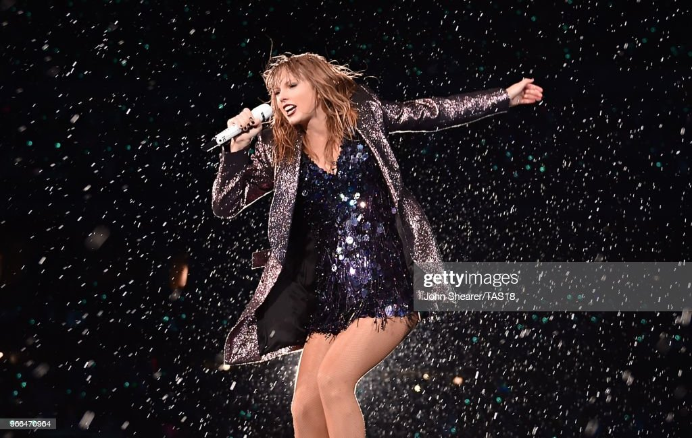
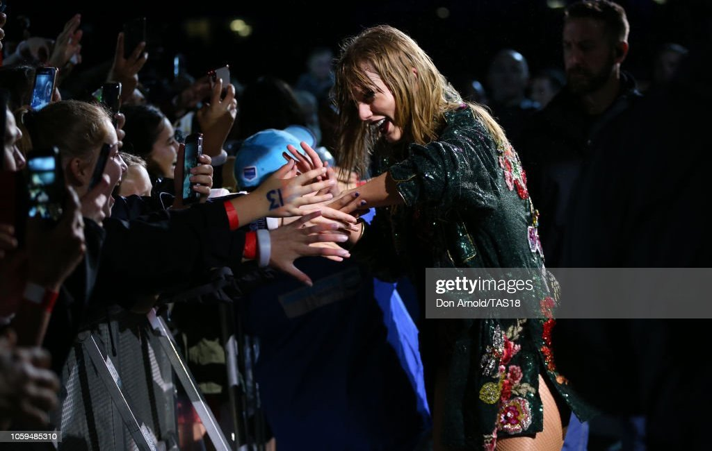
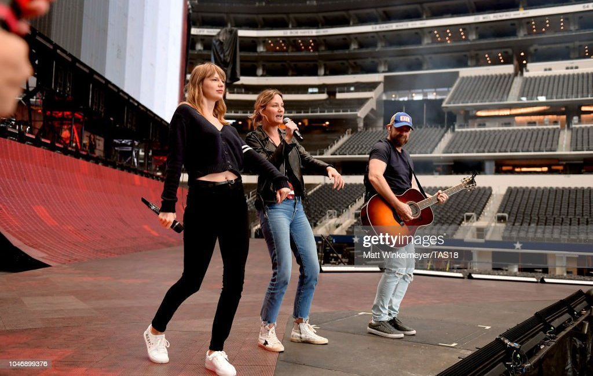
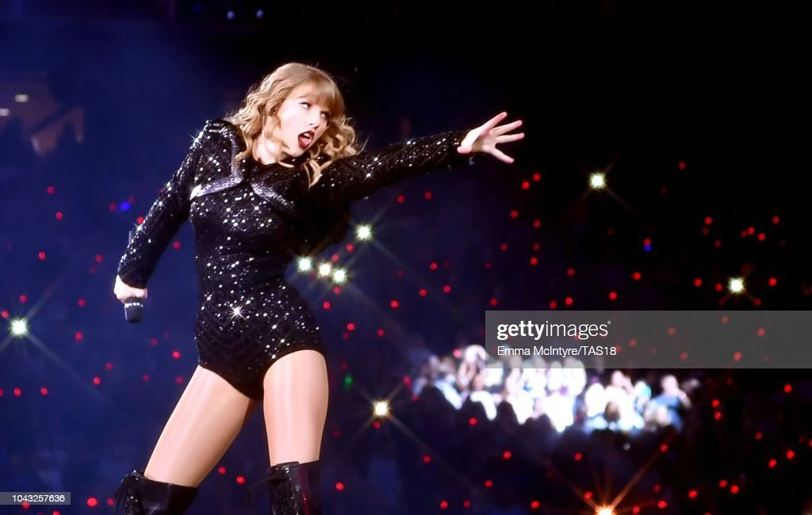
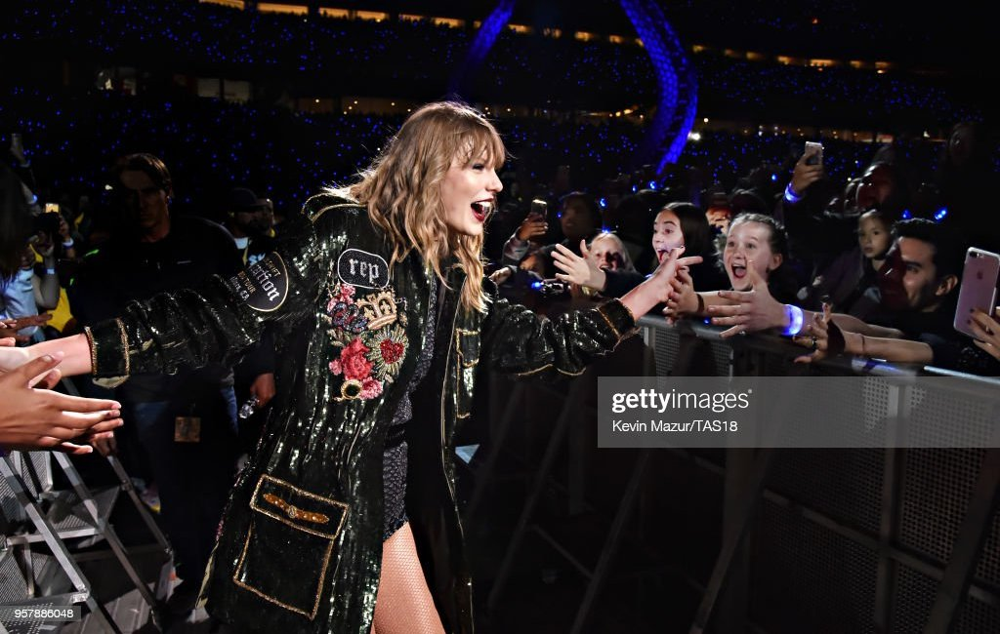
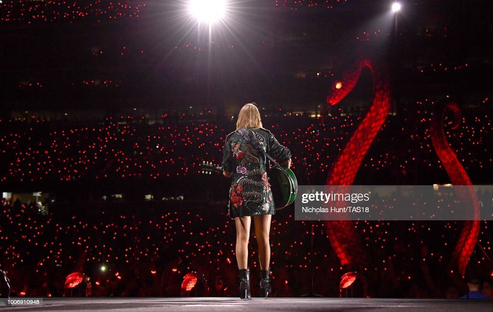
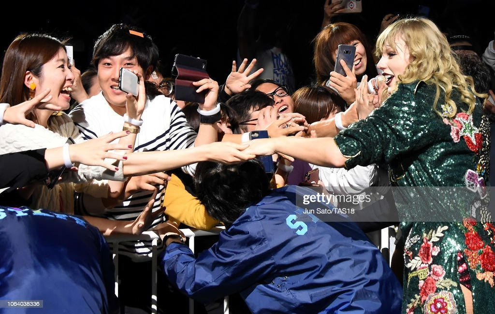
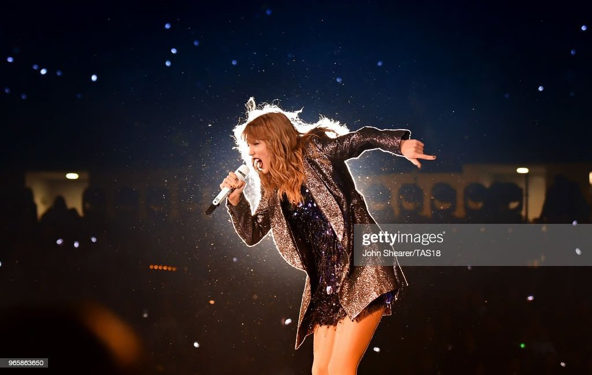
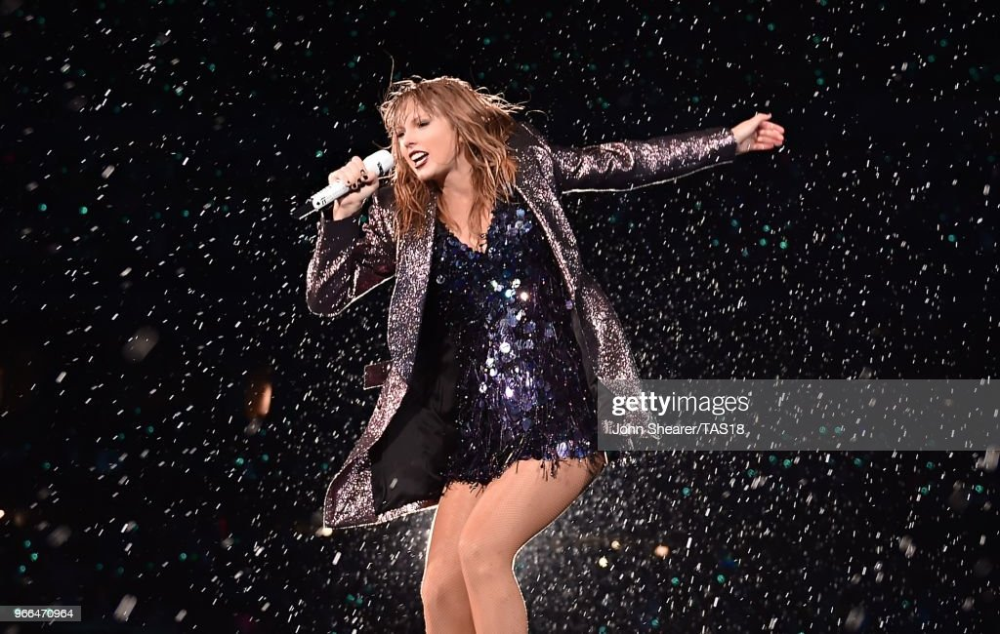
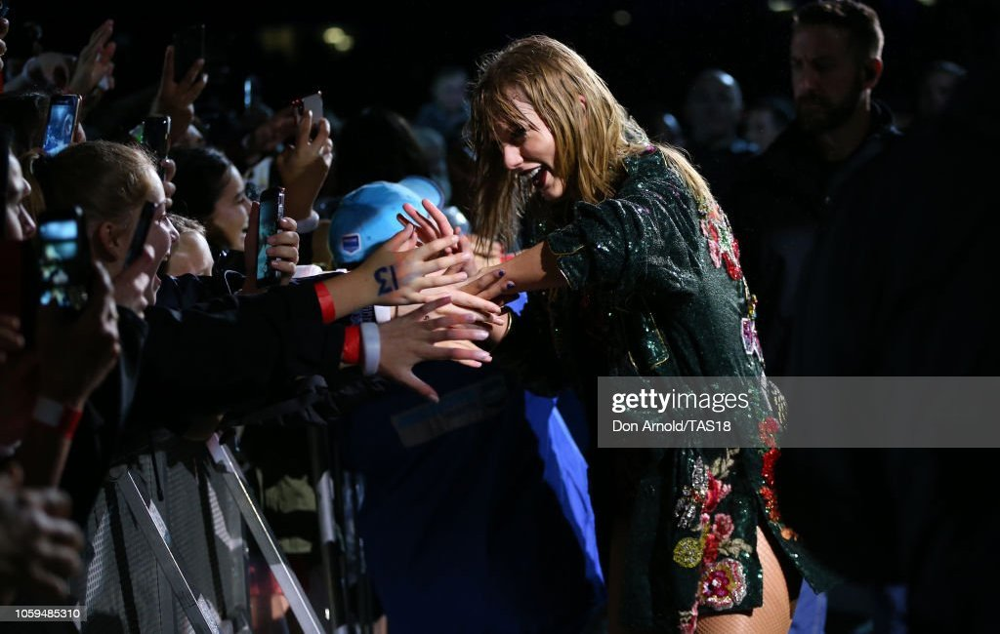
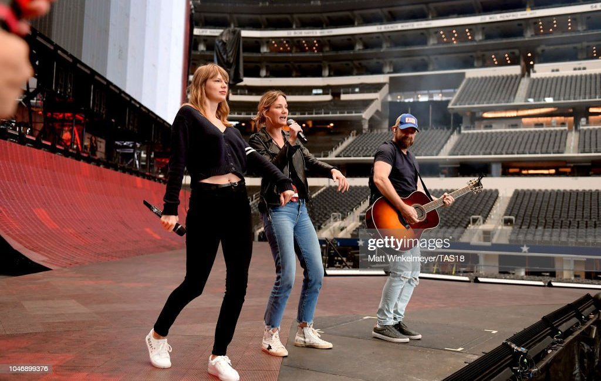
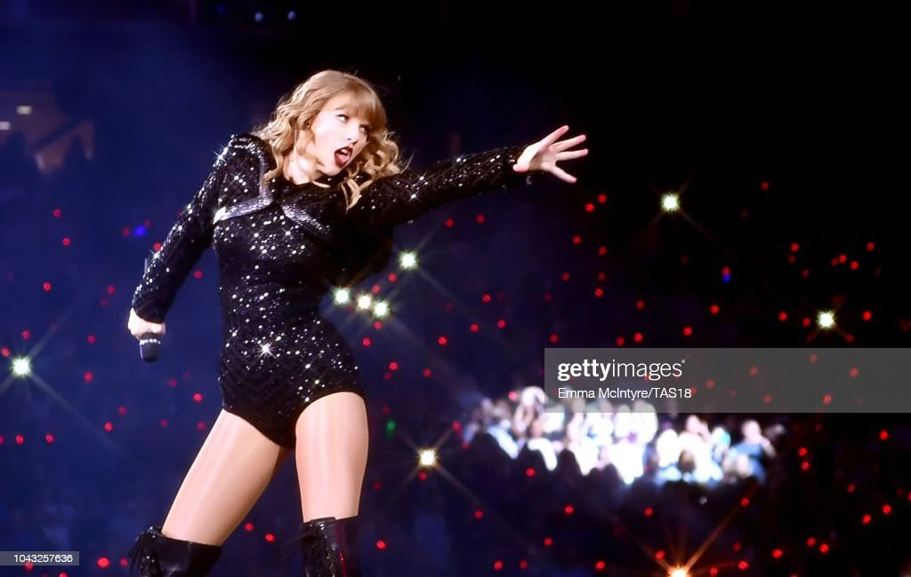
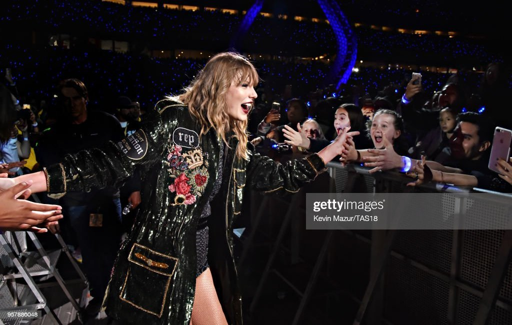
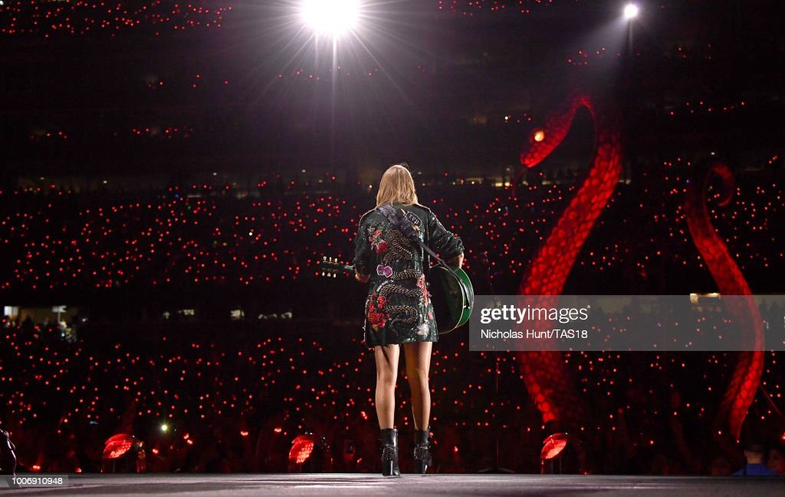
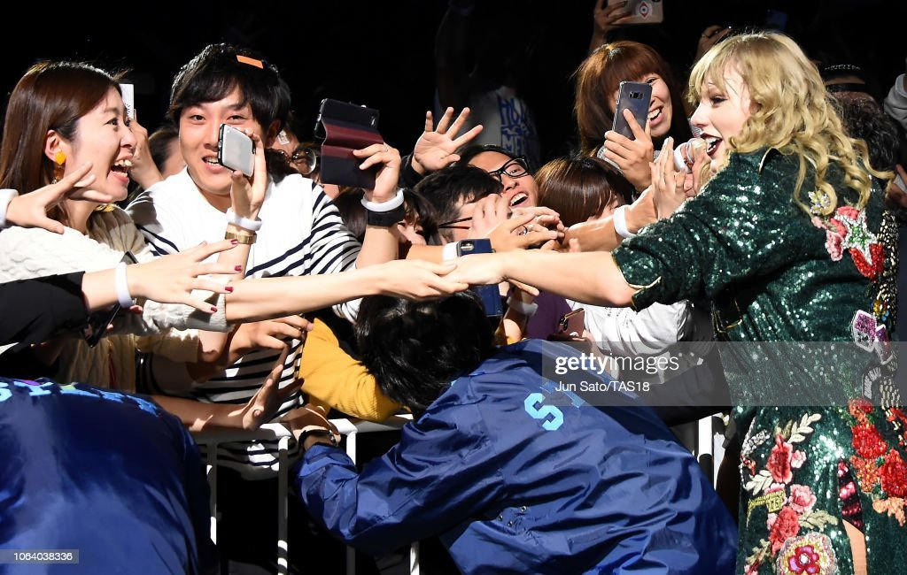
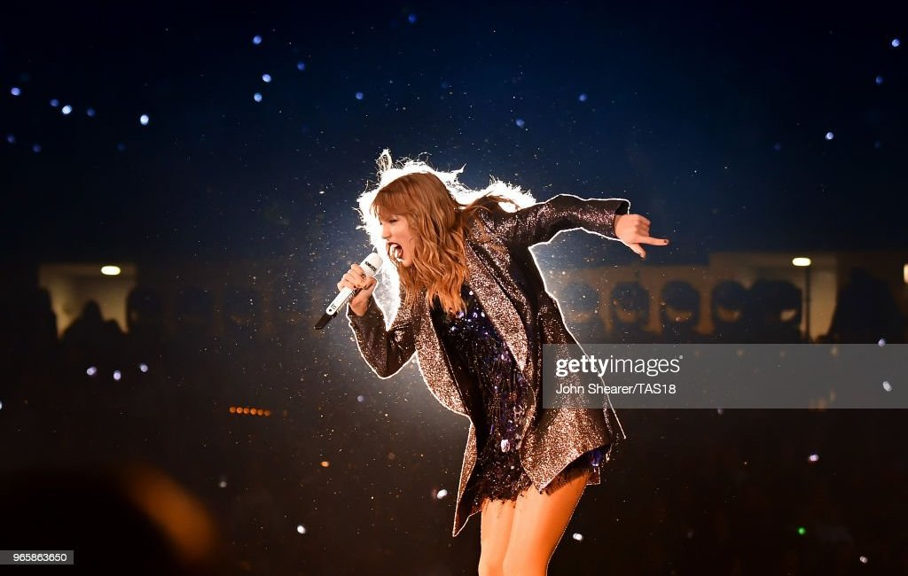